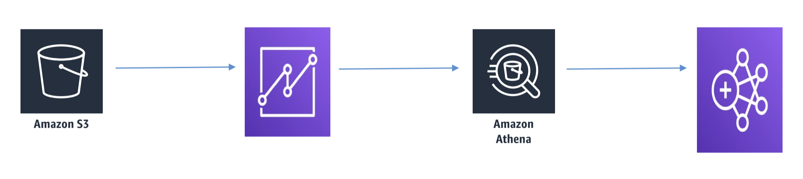
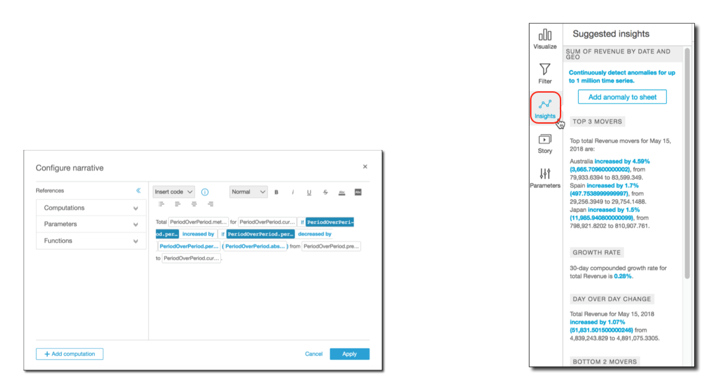
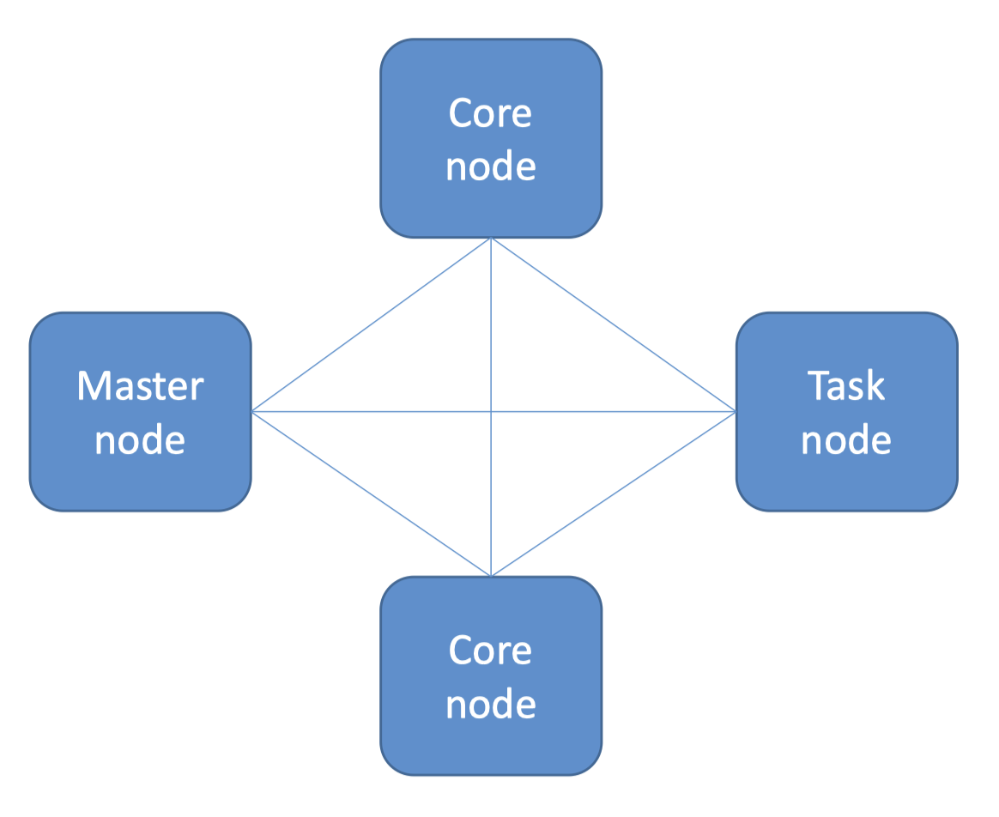
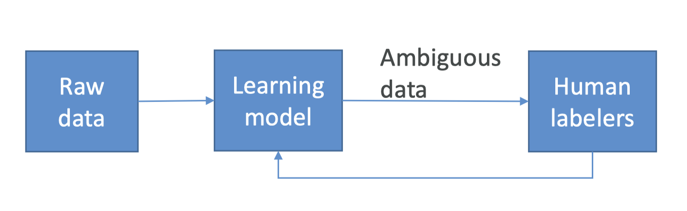

1. Amazon Athena• Serverlessinteractive queries of S3 data1.1. What is Athena?• Interactive query service for S3 (SQL)– No need to load data, it stays in S3• Presto under the hood• Serverless!• Supports many data formats– CSV (human readable)– JSON (human readable)– ORC (columnar, splittable)– Parquet (columnar, splittable)– Avro (splittable)• Unstructured, semi-structured, or structured1.2. Some Examples• Ad-hoc queries of web logs• Querying staging data before loading to Redshift• Analyze CloudTrail/CloudFront/VPC/ELB etc logs in S3• Integration with Jupyter, Zeppelin, RStudio notebooks• Integration with QuickSight• Integration via ODBC/JDBC with other visualization tools1.3. Athena + Glue

1.4. Athena Cost Model• Pay-as-you-go– $5 per TB scanned– Successful or cancelled queries count, failed queries do not.– No charge for DDL (CREATE/ALTER/DROP etc.)• Save LOTS of money by using columnar formats– ORC, Parquet– Save 30-90%, and get better performance• Glue and S3 have their own charges1.5. Athena Security• Access control– IAM, ACLs, S3 bucket policies– AmazonAthenaFullAccess / AWSQuicksightAthenaAccess• Encrypt results at rest in S3 staging directory– Server-side encryption with S3-managed key (SSE-S3)– Server-side encryption with KMS key (SSE-KMS)– Client-side encryption with KMS key (CSE-KMS)• Cross-account access in S3 bucket policy possible• Transport Layer Security (TLS) encrypts intransit (between Athena and S3)1.6. Athena anti-patterns• Highly formatted reports / visualization– That’s what QuickSight is for• ETL– Use Glue instead
2. Amazon QuickSight• Business analytics and visualizations in the cloud2.1. What is QuickSight?• Fast, easy, cloud-powered business analytics service• Allows all employees in an organization to:– Build visualizations– Perform ad-hoc analysis– Quickly get business insights from data– Anytime, on any device (browsers, mobile)• Serverless2.2. QuickSight Data Sources• Redshift• Aurora / RDS• Athena• EC2-hosted databases• Files (S3 or on-premises)– Excel– CSV, TSV– Common or extended log format• Data preparation allows limited ETL2.3. SPICE• Data sets are imported intoSPICE → Super-fast, Parallel, In-memory Calculation Engine– Uses columnar storage, in-memory, machine code generation– Accelerates interactive queries on large datasets• Each user gets 10GB of SPICE• Highly available / durable• Scales to hundreds of thousands of users2.4. QuickSight Use Cases• Interactive ad-hoc exploration / visualization of data• Dashboards and KPI’s• Analyze / visualize data from:– Logs in S3– On-premise databases– AWS (RDS, Redshift, Athena, S3)– SaaS applications, such as Salesforce– Any JDBC/ODBC data source2.5. Machine Learning Insights• Anomaly detection• Forecasting• Auto-narratives

2.6. QuickSight Anti-Patterns• Highly formatted canned reports– QuickSight is for ad-hoc queries, analysis, and visualization• ETL– Use Glue instead, although QuickSight can do some transformations2.7. QuickSight Security• Multi-factor authentication on your account• VPC connectivity– Add QuickSight’s IP address range to your database security groups• Row-level security• Private VPC access– Elastic Network Interface, AWS Direct Connect2.8. QuickSight User Management• Users defined via IAM, or email signup• Active Directory integration with QuickSight Enterprise Edition2.9. QuickSight Pricing• Annual subscription– Standard: $9 / user /month– Enterprise: $18 / user / month• Extra SPICE capacity (beyond 10GB)– $0.25 (standard) $0.38 (enterprise) / GB / month• Month to month– Standard: $12 / GB / month– Enterprise: $24 / GB / month• Enterprise edition– Encryption at rest– Microsoft Active Directory integration2.10. QuickSight Dashboards2.11. QuickSight Visual Types• AutoGraph• Bar Charts– For comparison and distribution (histograms)• Line graphs– For changes over time• Scatter plots, heat maps– For correlation• Pie graphs, tree maps– For aggregation• Pivot tables– For tabular data• Stories
3. EMR (Elastic MapReduce)• Elastic MapReduce• Managed Hadoop framework on EC2 instances• Includes Spark, HBase, Presto, Flink, Hive & more• EMR Notebooks• Several integration points with AWS3.1. An EMR Cluster• Master node:manages the cluster– Single EC2 instance• Core node:Hosts HDFS data and runs tasks– Can be scaled up & down, but with some risk• Task node:Runs tasks, does not host data– No risk of data loss when removing– Good use of spot instances

3.2. EMR Usage• Transient vs Long-Running Clusters– Can spin up task nodes using Spot instances for temporary capacity– Can use reserved instances on long-running clusters to save $• Connect directly to master to run jobs• Submit ordered steps via the console• EMR Serverless lets AWS scale your nodes automatically3.3. EMR / AWS Integration• Amazon EC2 for the instances that comprise the nodes in the cluster• Amazon VPC to configure the virtual network in which you launch your instances• Amazon S3 to store input and output data• Amazon CloudWatch to monitor cluster performance and configure alarms• AWS IAM to configure permissions• AWS CloudTrail to audit requests made to the service• AWS Data Pipeline to schedule and start your clusters3.4. EMR Storage• HDFS• EMRFS: access S3 as if it were HDFS– EMRFS Consistent View – Optional for S3 consistency– Uses DynamoDB to track consistency• Local file system• EBS for HDFS3.5. EMR promises• EMR charges by the hour– Plus EC2 charges• Provisions new nodes if a core node fails• Can add and remove tasks nodes on the fly• Can resize a running cluster’s core nodes3.6. So… what’s Hadoop?
3.7.6. Zeppelin + Spark• Can run Spark code interactively (like you can in the Spark shell)– This speeds up your development cycle– And allows easy experimentation and exploration of your big data• Can execute SQL queries directly against SparkSQL• Query results may be visualized in charts and graphs• Makes Spark feel more like a data science tool!3.8. EMR Notebook• Similar concept to Zeppelin, with more AWS integration• Notebooks backed up to S3• Provision clusters from the notebook!• Hosted inside a VPC• Accessed only via AWS console3.9. EMR Security• IAM policies• Kerberos• SSH• IAM roles3.10. EMR: Choosing Instance Types• Master node:– m4.large if < 50 nodes, m4.xlarge if > 50 nodes• Core & task nodes:– m4.large is usually good– If cluster waits a lot on external dependencies (i.e. a web crawler), t2.medium– Improved performance: m4.xlarge– Computation-intensive applications: high CPU instances– Database, memory-caching applications: high memory instances– Network / CPU-intensive (NLP, ML) – cluster computer instances• Spot instances– Good choice for task nodes– Only use on core & master if you’re testing or very cost-sensitive; you’re risking partial data loss
4. SageMaker Ground Truth• What is Ground Truth?– Sometimes you don’t have training data at all, and it needs to be generated by humans first.– Example: training an image classification model. Somebody needs to tag a bunch of images with what they are images of before training a neural network– Ground Truth manages humans who will label your data for training purposes• But it’s more than that– Ground Truth creates its own model as images are labeled by people– As this model learns, only images the model isn’t sure about are sent to human labelers– This can reduce the cost of labeling jobs by 70%

4.1. Who Are These Human Labelers?• Mechanical Turk• Your own internal team• Professional labeling companies4.2. Ground Truth Plus• Turnkey solution• “Our team of AWS Experts” manages the workflow and team of labelers– You fill out an intake form– They contact you and discuss pricing• You track progress via the Ground Truth Plus Project Portal• Get labeled data from S3 when done4.3. Other Ways to Generate Training Labels• Rekognition– AWS service for image recognition– Automatically classify images• Comprehend– AWS service for text analysis and topic modeling– Automatically classify text by topics, sentiment• Any pre-trained model or unsupervised technique that may be helpful
5. Lab: Preparing Data for TFIDF on Spark and EMR5.1. TF-IDF• Stands for Term Frequency and Inverse Document Frequency• Important data for search → figures out what terms are most relevant for a document• Term Frequency just measures how often a word occurs in a document– A word that occurs frequently is probably important to that document’s meaning• Document Frequency is how often a word occurs in an entire set of documents, i.e., all of Wikipedia or every web page– This tells us about common words that just appear everywhere no matter what the topic, like “a”, “the”, “and”, etc.• So a measure of the relevancy of a word to a document might be:• Term Frequency
Document Frequency• Or: Term Frequency * Inverse Document Frequency• That is, take how often the word appears in a document, over how often it just appears everywhere. That gives you a measure of how important and unique this word is for this document5.2. TF-IDF In Practice• We actually use the log of the IDF, since word frequencies are distributed exponentially. That gives us a better weighting of a words overall popularity• TF-IDF assumes a document is just a “bag of words”– Parsing documents into a bag of words can be most of the work– Words can be represented as a hash value (number) for efficiency– What about synonyms? Various tenses? Abbreviations? Capitalizations? Misspellings?• Doing this at scale is the hard part– That’s where Spark comes in!5.3. Unigrams, Bigrams, etc.• An extension of TF-IDF is to not only compute relevancy for individual words (terms) but also for bi-grams or, more generally, n-grams.• “I love certification exams”– Unigrams: “I”, “love”, “certification”, “exams”– Bi-grams: “I love”, “love certification”, “certification exams”– Tri-grams: “I love certification”, “love certification exams”5.4. Using TF-IDF• A very simple search algorithm could be:– Compute TF-IDF for every word in a corpus– For a given search word, sort the documents by their TF-IDF score for that word– Display the results